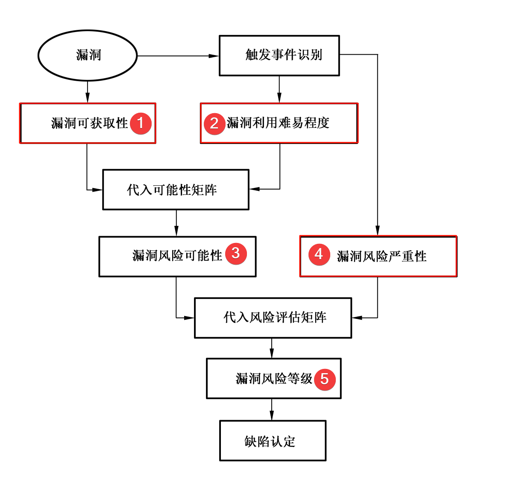
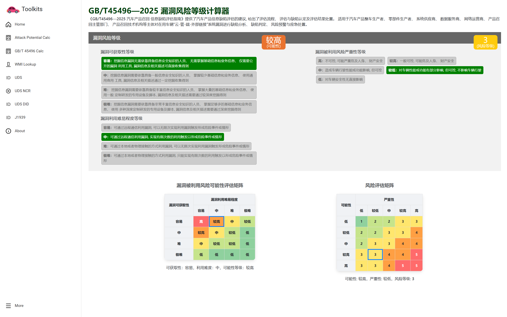

车联网安全进阶之GB-T45496漏洞风险等级计算器发布
国家市场监督管理总局缺陷产品召回技术中心(DPRC)主导的汽车漏洞召回标准《GB/T 45496-2025 汽车产品召回 信息缺陷评估指南》于2025年3月28日发布并实施。
提供了汽车产品信息缺陷评估的建议, 给出了评估流程、 评估与缺陷认定及评估结果处置。
适用于汽车产品整车生产者、 零部件生产者、 系统供应商、 数据服务商、 网络运营商、 产品召回主管部门、 产品召回技术机构等主体对在用车辆“云-管-端-外部链接”系统漏洞进行缺陷分析、 缺陷判定、 风险预警与应急处置。
近日各大主机厂收到了 DPRC 的通知，需要依据 GB/T 45496-2025 分析并反馈某漏洞对本企业车辆影响的情况。 GB/T 45496-2025 首次应用，大家对标准的应用还不熟悉。企业需要对缺陷进行认定，如综合风险水平等级为高(第5 级) 和较高(第4 级) 的漏洞则应实施召回。本文重点关注于漏洞风险等级，其他细节这里就不展开，大家可以直接查看标准原文。
GB/T 45496-2025 中较大的篇幅在讲解 漏洞风险等级的计算。漏洞风险等级涉及漏洞被利用引发危险事件或情形的可能性和严重性两个维度，可能性是根据漏洞可获取性和漏洞利用难以程序带入可能性矩阵得到的。

其中，计算可能性和漏洞风险等级有两个矩阵需要带入。在评估的时候，如果有调整需要打开标准文件重新对应这两个矩阵，感觉还是有点麻烦。受到 CVSS 计算器的触发，编写了专用计算器用于简化漏洞风险等级的计算。欢迎有需要的朋友，访问 http://delikely.eu.org/Automotive-Security-Toolkit/?option=GB_T_45496_2025_calculator 使用。
